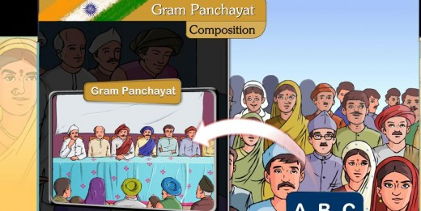

|  | A gram panchayat ( transl. 'village council') or village panchayat is the only grassroots-level of panchayati raj formalised local self-governance system in India at the village or small-town level, and has a sarpanch as its elected head. |
LETTERS
Thanks for visiting Gram Panchayat website
Copyright © Gram Panchayat 2020-2021